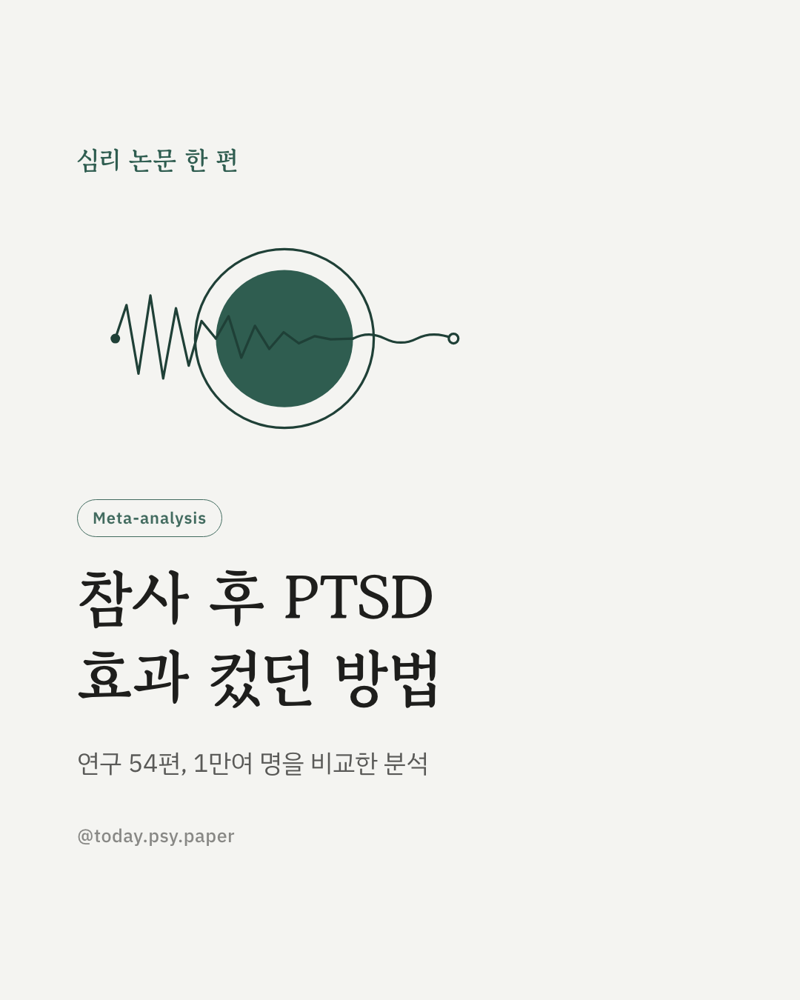
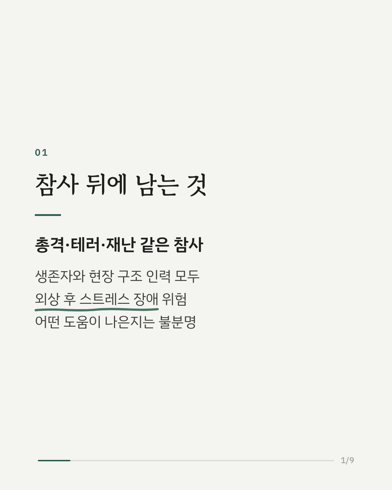
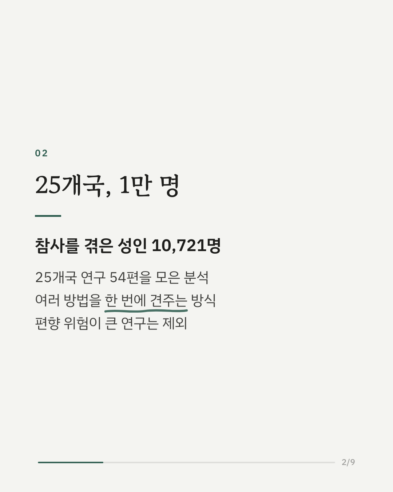
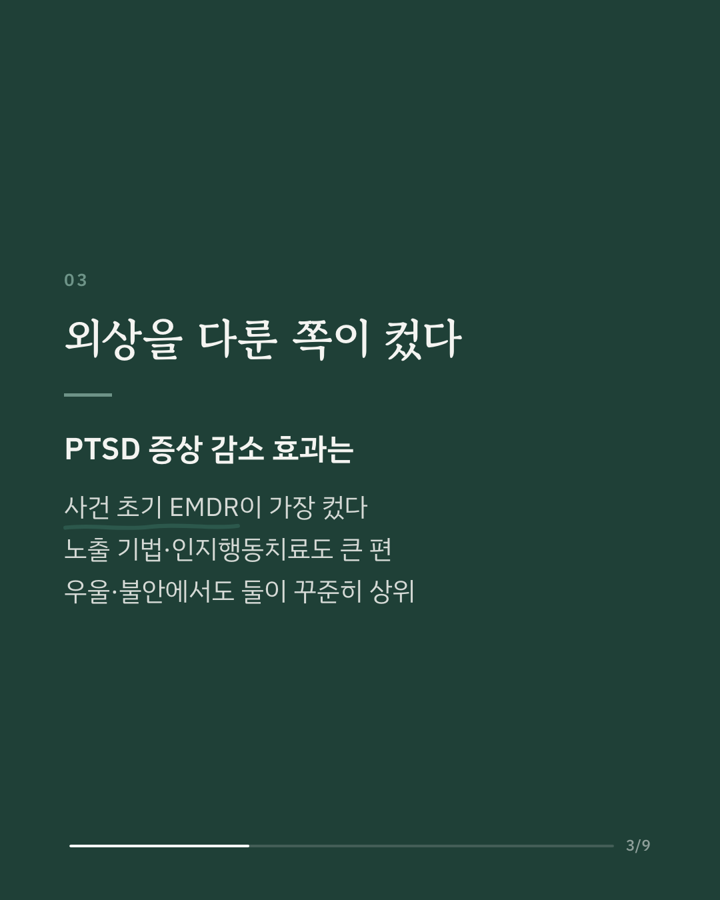
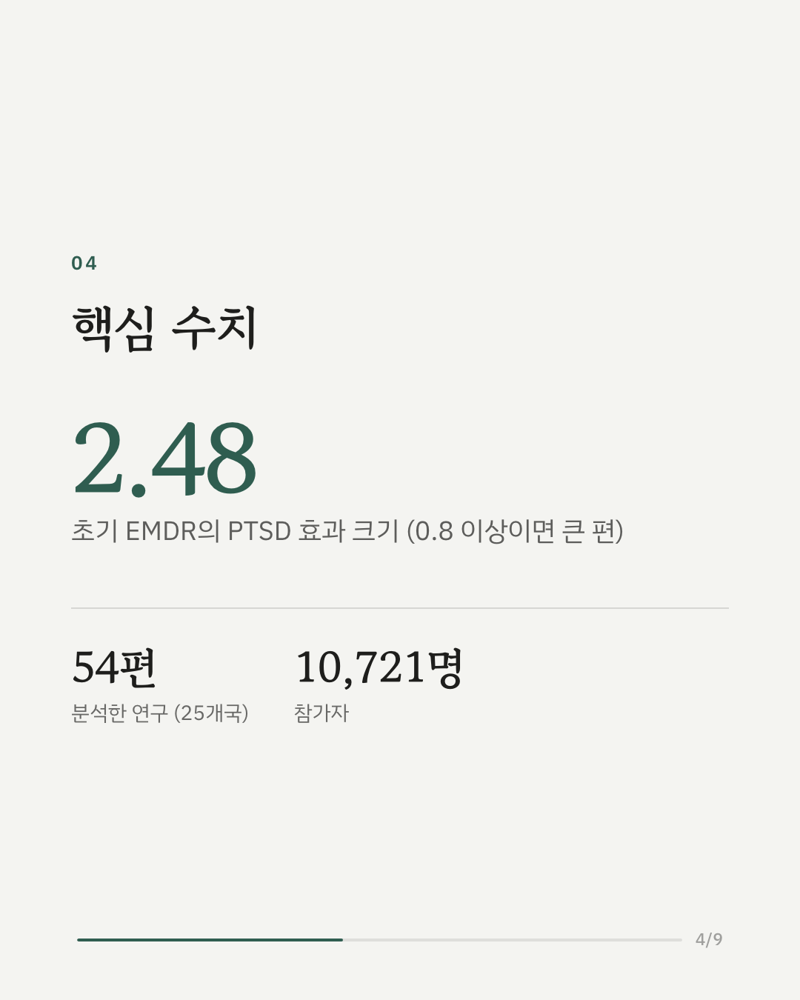
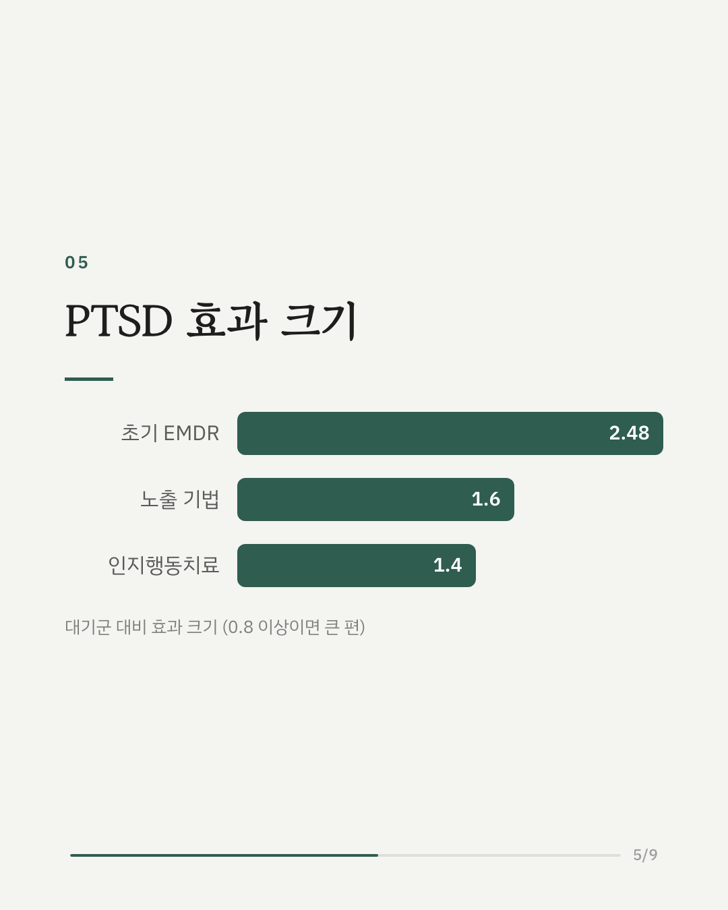
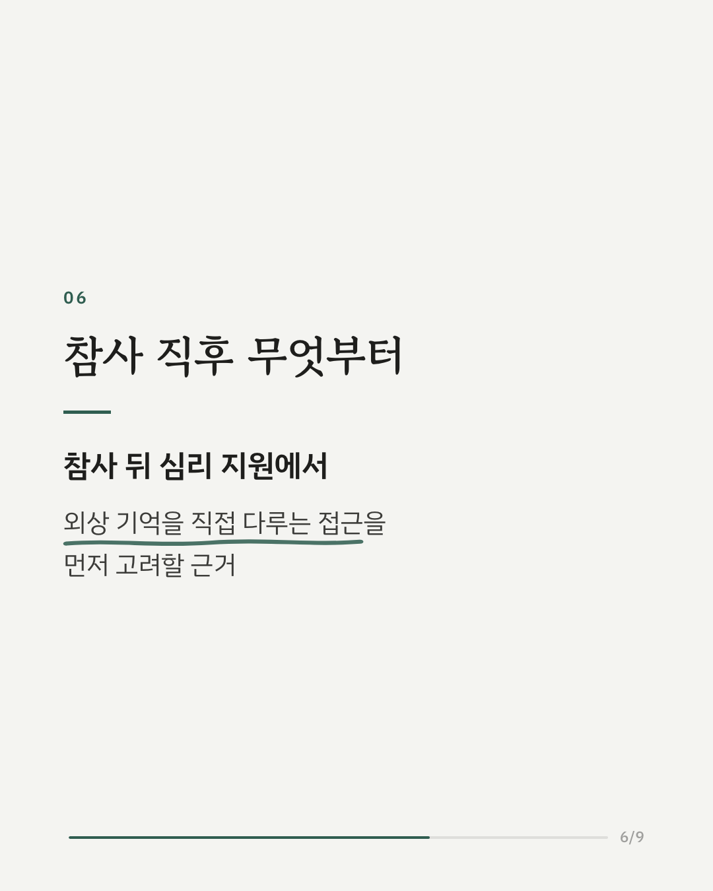
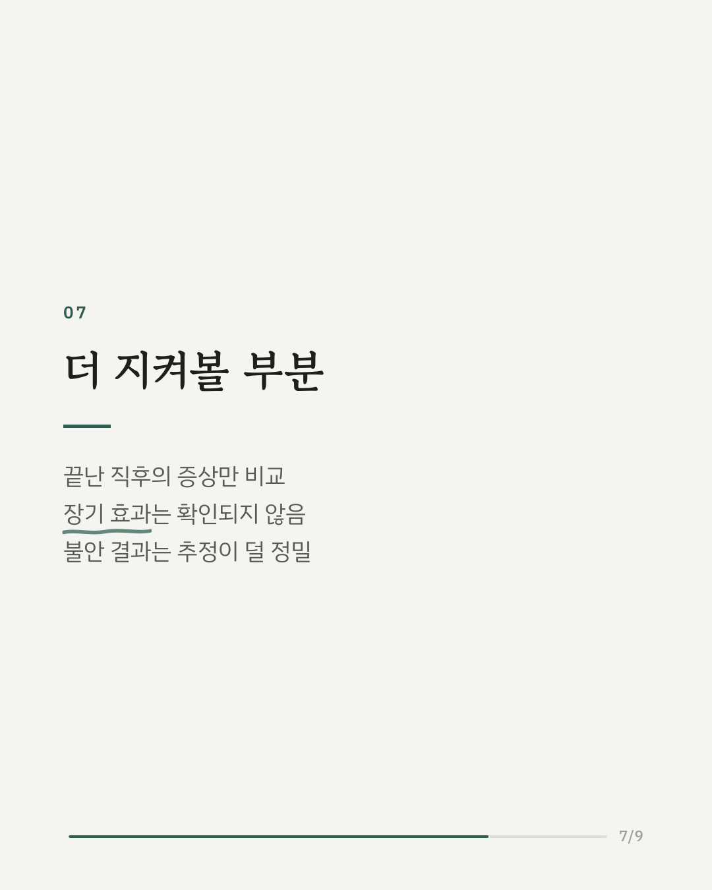
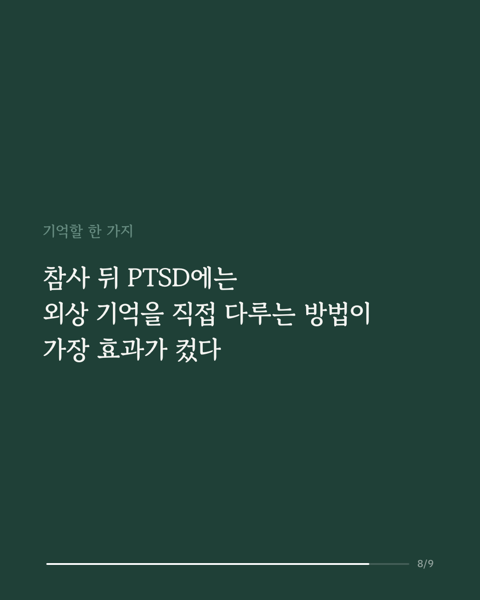
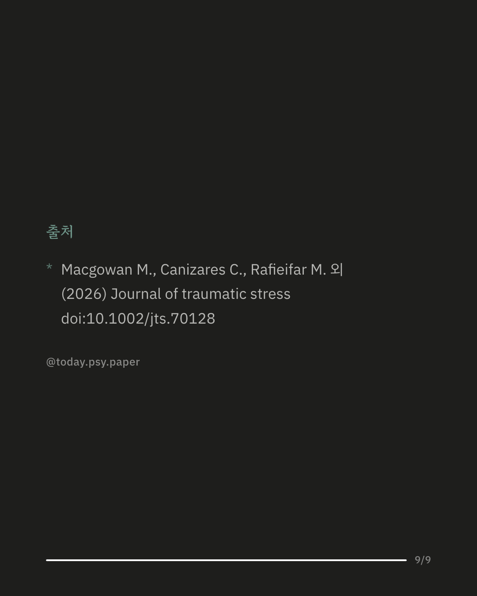

총격, 테러, 대형 재난 같은 참사를 겪은 뒤에는 생존자뿐 아니라 현장 구조 인력도 트라우마로 오래 힘들 수 있습니다. 이 연구는 외상 후 스트레스 장애(PTSD)와 우울·불안을 줄이는 데 어떤 심리적 도움이 가장 효과적인지 비교했습니다. 25개국에서 나온 연구 54편, 참가자 10,721명을 모아 여러 방법을 한 번에 견주는 네트워크 메타분석을 했습니다. PTSD에서는 사건 초기에 하는 EMDR(눈 움직임을 활용해 외상 기억을 다루는 기법)의 효과가 가장 컸고, 노출 기법과 인지행동치료도 큰 효과를 보였습니다. 초기 EMDR과 인지행동치료는 통상적인 관리와 비교해도 효과가 유지됐습니다. 우울에서는 노출 기법, 대인관계치료, 심신 수련, 인지행동치료가 효과를 보였고, 불안에서도 노출 기법과 인지행동치료가 앞섰습니다. 연구진은 참사 뒤 외상 기억을 직접 다루는 접근을 우선할 근거라고 봤습니다. 다만 대부분 치료 직후 증상만 비교해 효과가 얼마나 오래가는지는 확인되지 않았습니다. Journal of Traumatic Stress (2026), 'Psychosocial interventions for adult survivors and responders exposed to mass casualty events: A systematic review and network meta-analysis' DOI: 10.1002/jts.70128 #임상심리 #심리학연구 #논문리뷰 #트라우마 #외상후스트레스장애 #인지행동치료 #재난심리 #심리상담
python3 publish.py 42908503